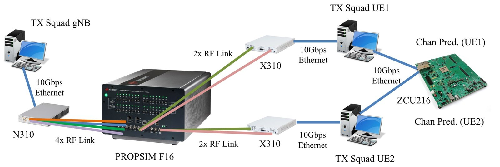
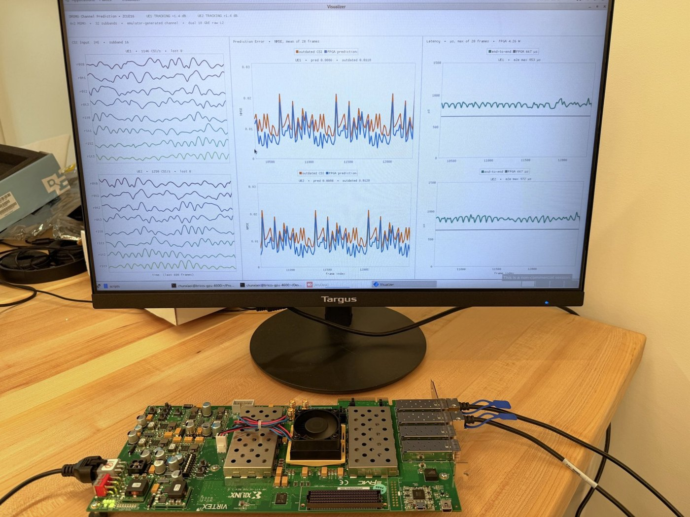
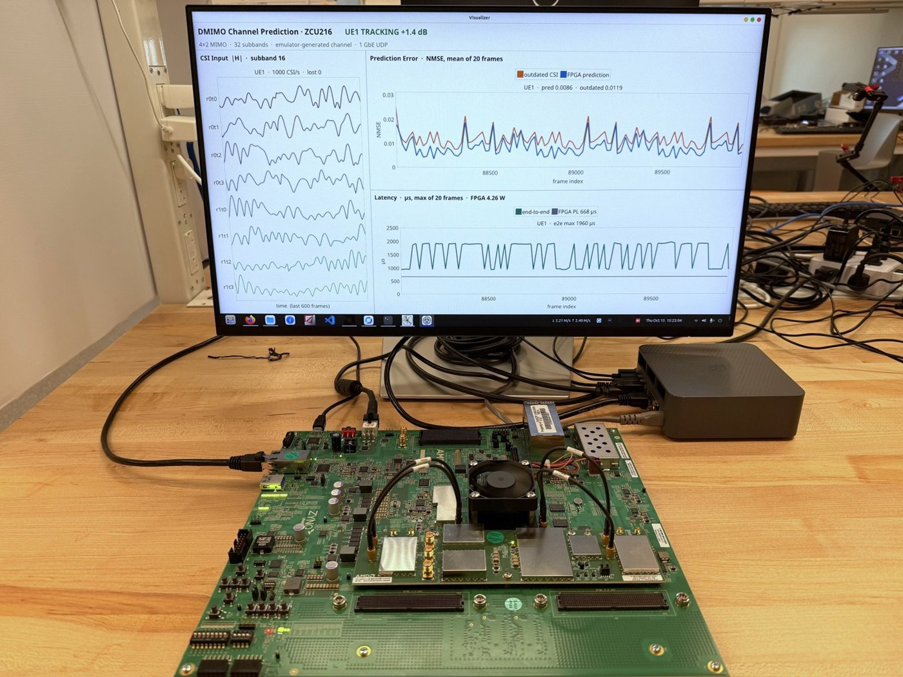

Real-time 10G Ethernet PC–FPGA testbed for distributed MIMO
Channel predictors are only useful if they keep up with a live radio link. This testbed puts the FPGA reservoir-computing accelerator inside a real distributed MIMO (DMIMO) loop, so every new channel measurement is turned into a prediction and sent back within the same frame time.
System setup
Distributed MIMO link
A 4-antenna base station (gNB) serves two 2-antenna users (UEs), a 4×2 DMIMO system. Software-defined radios (one N310 for the gNB, one X310 per UE) carry the signals.
Realistic, repeatable channels
All RF links pass through a Keysight PROPSIM F16 channel emulator, which generates high-mobility fading channels, so the same scenario can be replayed for every design.
Host PCs and the FPGA
Each UE's host PC estimates the channel (32 subbands) and streams it to the FPGA over its own 10 Gb/s Ethernet link; the predicted channel comes back on the same link.

Design
One predictor per user
The FPGA runs one windowed echo state network (WESN) channel per UE in parallel, so both users are served at the full frame rate.
Learning while running
The reservoir is fixed and only the readout is trained, so the predictor keeps retraining on the newest channel measurements and tracks the fading as it changes.
Two testbed generations
A first 1 GbE testbed (embedded processor plus programmable logic) is used to bring up each new model; the 10 GbE testbed moves the whole Ethernet path into hardware for lower and steadier latency.
Real-world setup


Live demo
Results
- Prediction error: NMSE drops from about 0.012 when reusing the outdated channel to about 0.009 with the FPGA prediction, for both users.
- Throughput: 1,250 channel estimates per second per user.
- Latency: under 0.9 ms end to end on the 10 GbE testbed (under 2 ms on the 1 GbE testbed).
- Power: 3.42 W for the FPGA on the 10 GbE testbed.